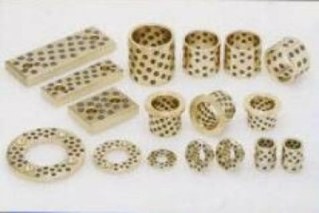
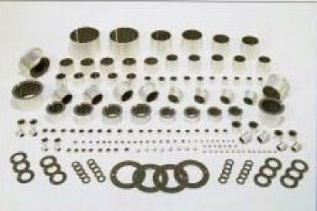
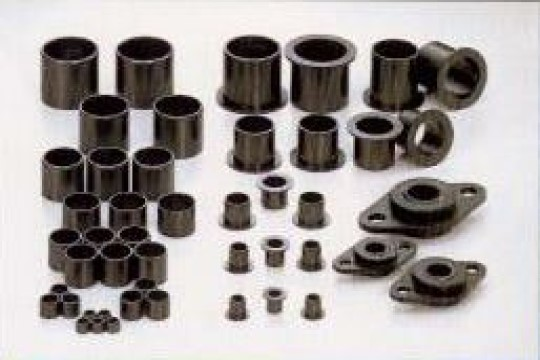
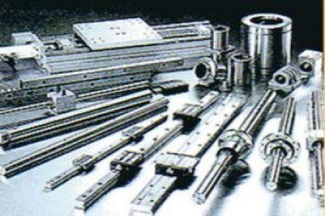
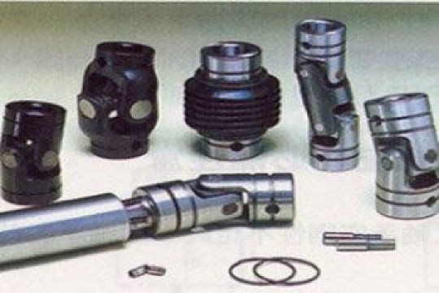
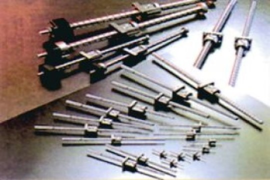
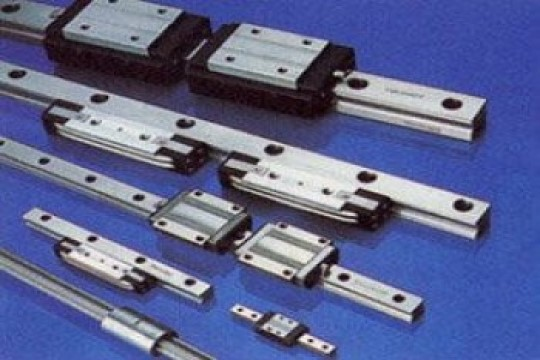

元誠傳動實業有限公司
元誠傳動實業有限公司
03-536-5292 (FAX)03-536-5291
30054 新竹市北區東大路二段307號六樓之9
© 2019 Logistic. All Rights Reserved | Design by W3layouts

※ 500sp※ 無給油亦可以使用。※ 在高荷重低轉速的情況，仍可發揮優越的性能。※ 往復運動，搖繒B動，啟動停止頻繁等油膜形成困難的場所，仍可發揮優越的耐摩耗性。※ 優越的耐藥品性及耐蝕性。※ 豐富的標準品，可配用市面販賣的標準軸心使用。
LFB※ 無給油亦可以使用。※ 在高負荷低轉速，呈現低摩擦係數而對耐摩耗性佳。※ 從低溫至高溫的使用範圍廣。※ 耐藥品性極佳。※ 適用於任何方向之滑動運動。※ 複層型軸承的優點是具有優越的尺寸安定性，機械強度，熱傳導性。※ 軸承厚度薄而輕，設計時不佔空間。※ 導電性要求的場所，亦可使用。※ 在中高速領域中，並用潤滑油的時候，可提高使用之PV值。


※ 80#※ 無給油亦可以使用。※ 耐荷重性，耐摩擦性極佳。※ 摩擦係數低，速度特性極佳。※ 不會發生黏膜（stick slip）及嘰嘰嘎嘎聲。※ 價格較銅系燒結含油軸承低。
NB線性軸承為日本知名品牌，舉凡機械有直線運動或旋轉運動時使用，針對產品的精度、剛性、壽命等要素，要求高水準化的強烈要求，其特性：★摩擦抵抗力小★高精度、高剛性★負荷容量大、長壽命★可以使用於高速運動、高加速運動★組裝簡單、種類豐富。使用於工作機械、產業機械、電子機械、光學機械、食品機械及各種測定儀器。歡迎來電洽詢型式規格尺寸。


KYOWA萬向接頭為日本協和株式會社所生產的高剛性萬向接頭，內徑從3～50mm寸法規格齊全，其特性★具有高傳達能力★優良的回轉精度★主要產品全部使用材質SCM415高硬度剛性材質★精度、強度、耐久性與價格皆具有市場競爭力，使用於多軸鑽床，各種工作機械、印雙機械、木工機械、建設機械、溶接機、醫療機械、食品機械及一般產業機械。
KURODA為日本黑田精工株式會社所創立的知名品牌，主要生產高性能之滾珠螺桿，其精度從C1～C10皆有精密生產，目前國內以進口C5高精密級、C7精密級、C10轉造級三種，使用於半導體製造裝置，自動繪圖機，各種產業界自動化機械的對應，歡迎來電洽詢型式規格尺寸。


TSUBAKI椿本株式會社為歷史悠久的品牌，與國內THK、NSK、NB統稱日本滾珠滑軌四大廠商，所生產的高剛性鋼珠更名列日本前茅，規格種類繁多與其他廠牌互換性高，為維護品質之優異性，其本身滾珠滑軌全零件皆由公司一體生產，絕無外包廠商加工，詳細規格尺寸請洽本公司。
元誠傳動實業有限公司
03-536-5292 (FAX)03-536-5291
30054 新竹市北區東大路二段307號六樓之9
© 2019 Logistic. All Rights Reserved | Design by W3layouts